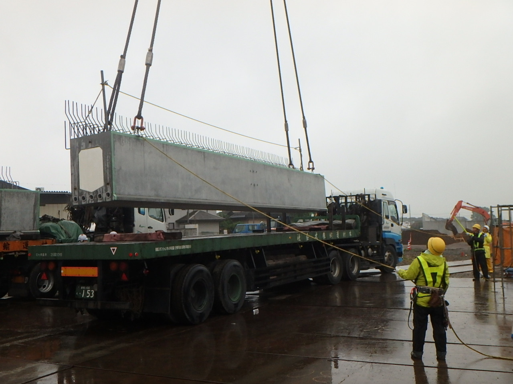
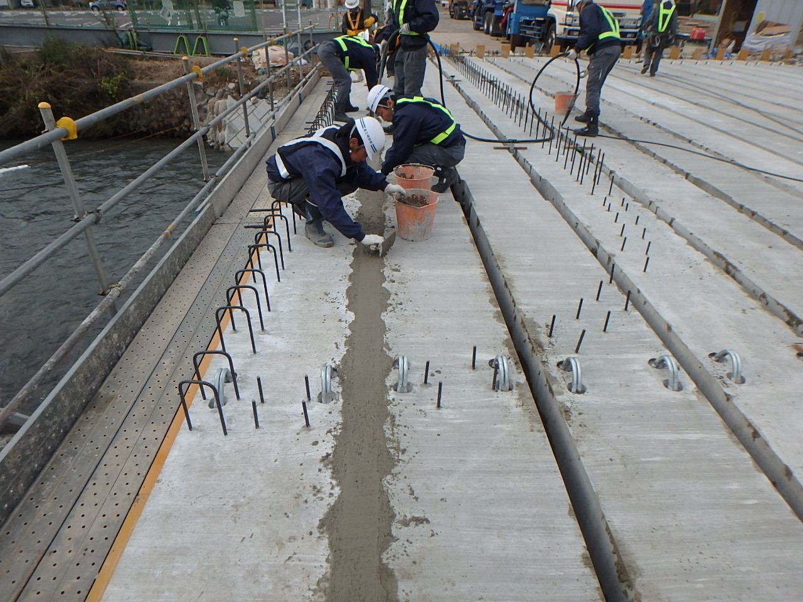
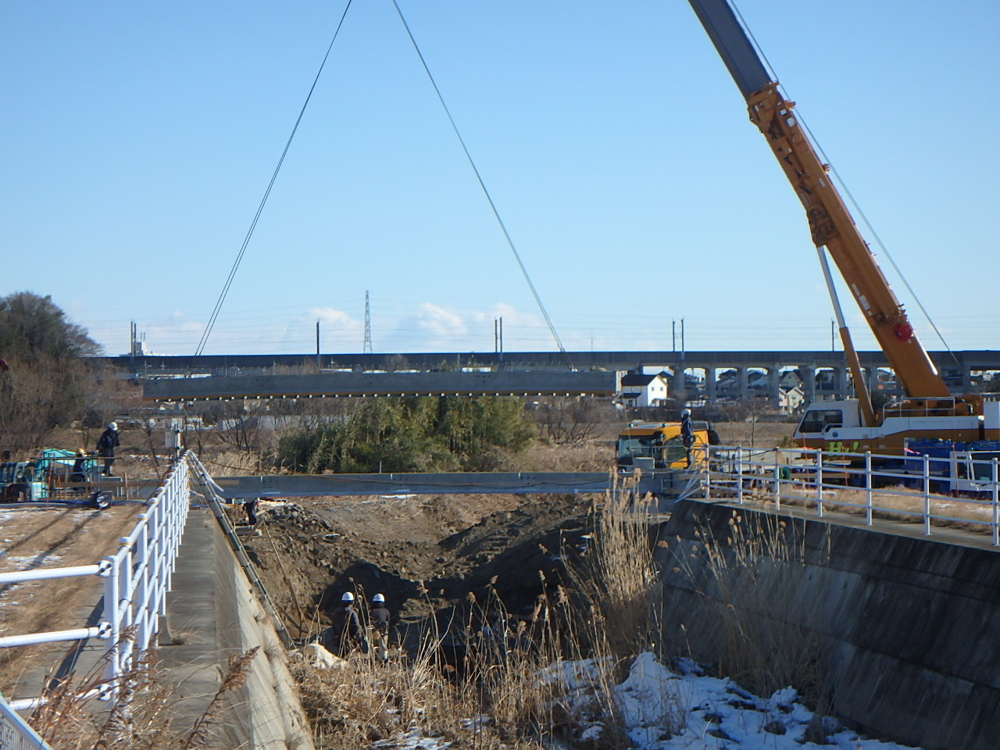
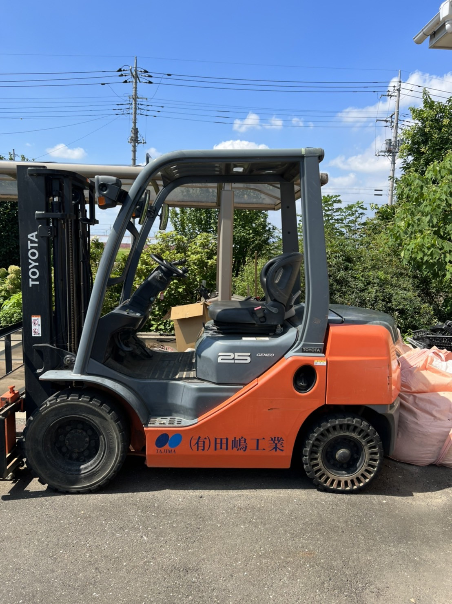

新東名高速、首都高速、圏央道——。誰もが通る道の「橋」を、群馬から30年つくり続けてきました。次の30年を、一緒につくる仲間を探しています。
PC（プレストレスト・コンクリート）とメタルを用いた橋梁上部工を中心に、補修から外構まで。設計・施工・監理まで一貫して担います。

PC桁の製作・運搬・架設まで。高速道路から生活道路まで、橋の上部工を専門に手がけます。

床版取替・補強・改良。高度成長期に架けられた橋を、次の世代へ引き継ぐ仕事です。

土木一式から個人宅のガーデン・エクステリアまで。グループ会社と連携して対応します。
実績の一部をご紹介します。大型のインフラ案件で積んだ経験が、すべての現場の品質を支えています。
「あの橋、俺がつくった」——家族にそう言える仕事です。経験者はもちろん、未経験からベテランに育った先輩が何人もいます。
日本中の橋がいま、架け替えと補修の時代に入っています。技術を身につければ、どこでも食べていける。だからこそ、教えることを惜しみません。資格取得も会社が支援します。※支援制度の詳細は貴社と相談のうえ記載
※応募フォームは御社の採用フロー（電話／Indeed／エリム株式会社経由）に合わせて接続します。スマホから2分で送れる応募フォームを想定。
応募する前に、どんな現場でどんな人が働いているかが見える。それがいちばんの採用広報です。※アカウント開設・運用体制もあわせてご提案します

写真は御社サイトより| 社名 | 有限会社 田嶋工業 |
|---|---|
| 本社 | 〒379-2306 群馬県太田市大久保町125-23 TEL 027-779-0832 |
| 前橋営業所 | 〒371-0816 群馬県前橋市上佐鳥町631-7 TEL 027-289-4822 |
| 創業／設立 | 1992年5月 創業／1996年11月 法人設立（2026年で設立30周年） |
| 代表 | 代表取締役社長 田嶋 秀郎 |
| 事業内容 | 土木一式・建築一式工事の設計・施工・監理／とび・土木・鉄筋工事／プレストレスト・コンクリート製品、コンクリート製品の製造 |
| 建設業許可 | 群馬県知事 許可（般-1）第19179号 |
| グループ会社 | エリム株式会社（2013年設立・外国人材支援） |
| 本社 | 群馬県太田市大久保町125-23 |
|---|---|
| 前橋営業所 | 群馬県前橋市上佐鳥町631-7 |
| 駐車場 | あり（無料）・マイカー通勤可 |
現場見学のご希望は、お電話にてお気軽にご相談ください。